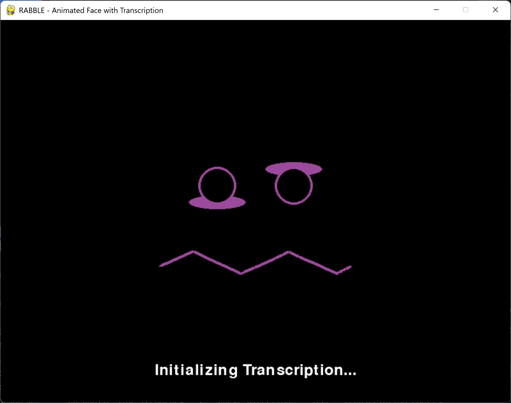
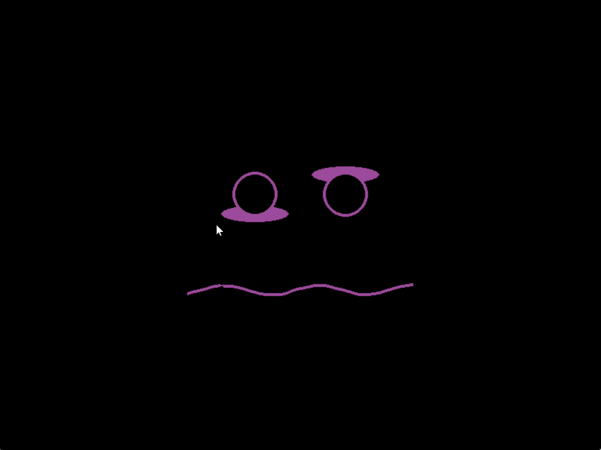

RaBbLE.py
The first thing that looked like RaBbLE — an animated pygame face with live audio visualisation, Whisper speech-to-text transcription, and pluggable LLM agent integration. Built before the Collective, before Aether, before NeBuLA. The face architecture here directly informed what NeBuLA became.

Full system running — mouth waveform driven by audio input, Whisper transcription active, word display manager rendering output in real time.

Early iteration — emotion states loaded from .rabl config files, natural eye blinking, and basic mouth animation. The architecture that NeBuLA's eye component evolved from.
Pygame-based modular face — Eyes, Mouth, Face components. Emotion states from .rabl YAML config files.
Mouth animates in real time against microphone input — waveform amplitude drives shape and frequency.
Swappable Whisper / Faster-Whisper backends. Overlapping audio buffers, timestamped transcription logs.
AbstractLLMAgent interface. EchoAgent + GoogleADK placeholder. Responses displayed on screen.
Transcribed words rendered with smooth scroll animations — the WordDisplayManager.
Lightweight by design — intended for resource-constrained edge deployment alongside local LLM inference.